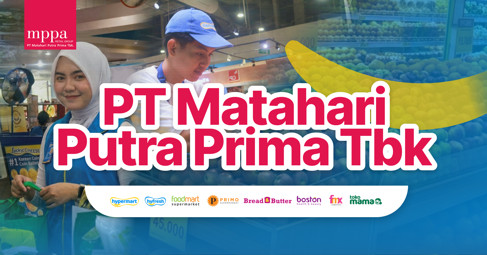

Pilih wilayah untuk menemukan lokasi penempatan kamu.
Find Your Company Placement!
Belum ada lokasi yang dipilih
Silakan pilih wilayah pada dropdown di atas.

Placement Location Guide
Pilih wilayah untuk menemukan lokasi penempatan kamu.
Find Your Company Placement!
Silakan pilih wilayah pada dropdown di atas.